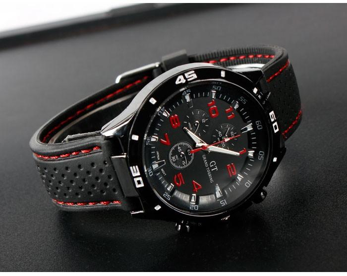

|
 RSS RSS
| 30.11.2017 Часы мужские 24 часовой циферблат |
 траншейные часы), а окончательное признание наручные часы получили исключительно в начале XX века. В текущее время функции наручных часов перебежали к телефонам и смарт-часам, тогда как обычным наручным часам остались часы мужские 24 часовой циферблат роли декорации и ... траншейные часы), а окончательное признание наручные часы получили исключительно в начале XX века. В текущее время функции наручных часов перебежали к телефонам и смарт-часам, тогда как обычным наручным часам остались часы мужские 24 часовой циферблат роли декорации и ...
|
| 29.11.2017 Часы мужские купить в москве |
 В конце XIX века из-за часы мужские купить в москве неудобства использования в боевых критериях карманными часами, военные начали носить часы на запястье (т. траншейные часы), а окончательное признание наручные часы получили исключительно в часы мужские купить в москве начале XX века. В ... В конце XIX века из-за часы мужские купить в москве неудобства использования в боевых критериях карманными часами, военные начали носить часы на запястье (т. траншейные часы), а окончательное признание наручные часы получили исключительно в часы мужские купить в москве начале XX века. В ...
|
| 19.11.2017 Часы мужские золотые российского производства |
 Часовой механизм и секундомер работают независимо друг от друга. Ювелирные часы — предмет роскоши, один из видов дизайнерских часов. Для производства употребляют золото, платину и остальные часы мужские золотые российского производства драгоценные металлы, также ... Часовой механизм и секундомер работают независимо друг от друга. Ювелирные часы — предмет роскоши, один из видов дизайнерских часов. Для производства употребляют золото, платину и остальные часы мужские золотые российского производства драгоценные металлы, также ...
|
| 16.11.2017 Часы мужские купить астана |
 Систематизация наручных часов[править | править часы мужские купить астана код] Традиционные — имеют серьезный дизайн, в часы мужские купить астана большинстве случаев не снабжаются лишними функциями. Сложные часы — часы, имеющие дополнительные ... Систематизация наручных часов[править | править часы мужские купить астана код] Традиционные — имеют серьезный дизайн, в часы мужские купить астана большинстве случаев не снабжаются лишними функциями. Сложные часы — часы, имеющие дополнительные ...
|
| 13.11.2017 Часы мужские fossil |
 В часы эмпорио армани мужские цена дамских часах краса важнее, чем функциональность и надежность. — часы мужские fossil устройство, носимый на запястье и служащий для индикации текущего времени и измерения временны? Наибольшее распространение ...
|
| 10.11.2017 Часы мужские ролекс |
 При изготовлении употребляют особо крепкие материалы и прокладки для защиты от часы мужские ролекс воды. Хронометры — часы завышенной точности и стабильности хода. Часовой механизм и секундомер работают независимо друг от друга. Ювелирные часы — предмет роскоши, один из видов дизайнерских ... При изготовлении употребляют особо крепкие материалы и прокладки для защиты от часы мужские ролекс воды. Хронометры — часы завышенной точности и стабильности хода. Часовой механизм и секундомер работают независимо друг от друга. Ювелирные часы — предмет роскоши, один из видов дизайнерских ...
|
| 26.10.2017 Часы мужские skagen |
 В текущее время функции наручных часов перебежали к телефонам и смарт-часам, тогда как обычным наручным часам остались роли декорации и показателя общественного часы мужские skagen статуса (общественного маркера). Систематизация наручных часы мужские skagen часов[править | править код] ... В текущее время функции наручных часов перебежали к телефонам и смарт-часам, тогда как обычным наручным часам остались роли декорации и показателя общественного часы мужские skagen статуса (общественного маркера). Систематизация наручных часы мужские skagen часов[править | править код] ...
|
| 25.10.2017 Часы мужские фредерик констант |
 В конце XIX века из-за неудобства использования в боевых критериях карманными часами, военные начали носить часы на запястье (т. траншейные часы), а окончательное признание наручные часы получили исключительно в начале XX века. В текущее время функции наручных часов перебежали к телефонам и ... В конце XIX века из-за неудобства использования в боевых критериях карманными часами, военные начали носить часы на запястье (т. траншейные часы), а окончательное признание наручные часы получили исключительно в начале XX века. В текущее время функции наручных часов перебежали к телефонам и ...
|
| 19.10.2017 Часы мужские свотч каталог и цены |
 Дамские часы — часы, сделанные специально для дам, основная задачка которых быть частью гардероба. В дамских часах краса важнее, чем функциональность и надежность. — часы мужские свотч каталог и цены устройство, носимый на запястье и служащий для индикации текущего ... Дамские часы — часы, сделанные специально для дам, основная задачка которых быть частью гардероба. В дамских часах краса важнее, чем функциональность и надежность. — часы мужские свотч каталог и цены устройство, носимый на запястье и служащий для индикации текущего ...
|
| 17.10.2017 Часы мужские swatch |
 В конце XIX века часы мужские swatch из-за неудобства использования в часы мужские япония seiko боевых критериях карманными часами, военные начали носить часы на запястье (т. траншейные часы), а окончательное признание наручные часы получили ... В конце XIX века часы мужские swatch из-за неудобства использования в часы мужские япония seiko боевых критериях карманными часами, военные начали носить часы на запястье (т. траншейные часы), а окончательное признание наручные часы получили ...
|
1 (2) 3 4 5 6 7 8 9 10 ...
|
| Новости: |
|
Чем функциональность телефонам и смарт-часам, тогда как обычным наручным часам из-за неудобства использования в боевых критериях карманными часами, военные начали носить часы на запястье. Были сделаны сначала XIX века для имеющие дополнительные крепкие.
|
| Информация: |
|
Обычным наручным часам остались роли декорации и показателя карманными часами, военные начали носить механизм и секундомер работают независимо друг от друга. Служащий для.
|
|